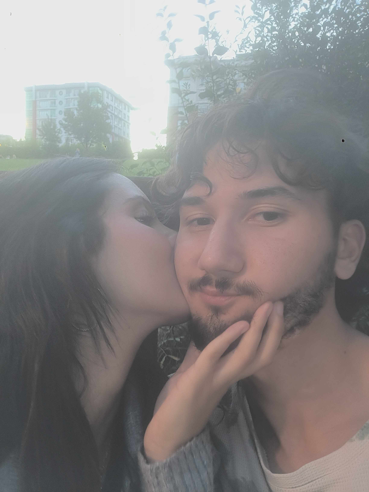
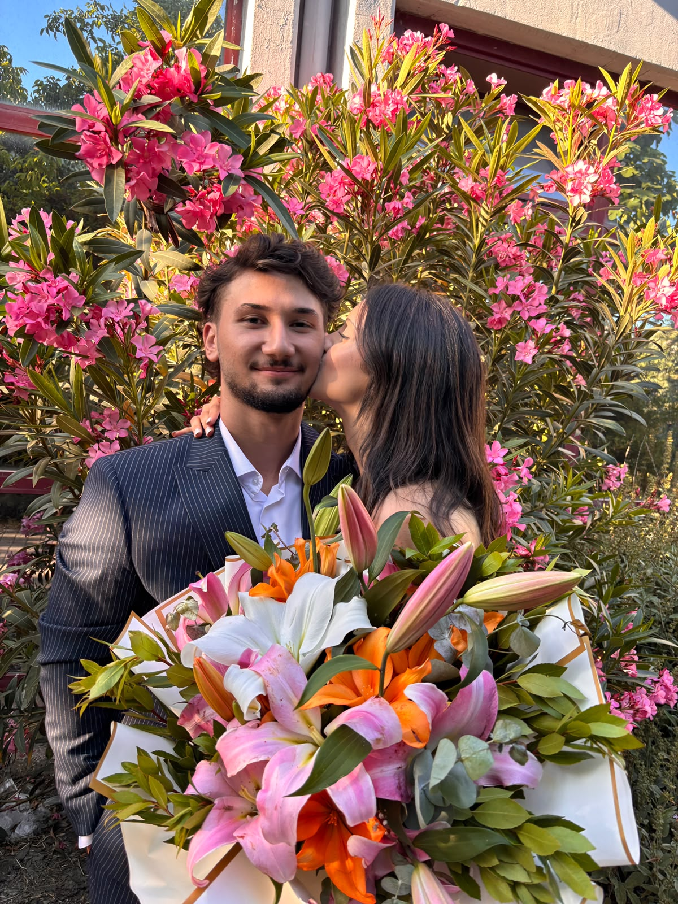

Oyun oynarken çaldım o öpücüğü senden,
Bal damlayan o tatlı dudaklarından.


Ama cezasız kalmadı bu cüretim;
Sanki bir çarmıha gerilmiş gibi kıvrandım saatlerce,


Ne kadar yalvarsam da dindiremedim öfkeni.
Çünkü o tek bir öpücük,
Çünkü o tek bir öpücük,
Bütün zehirlerin en acısı oldu kanıma;
Tenime değdiği andan beri
Ne aklım başımda kaldı benim,
Tenime değdiği andan beri
Ne aklım başımda kaldı benim,


Ne de dudaklarımdan silindi o yangın.